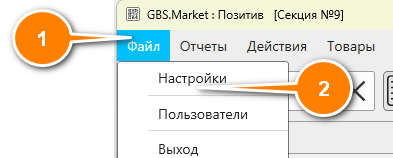
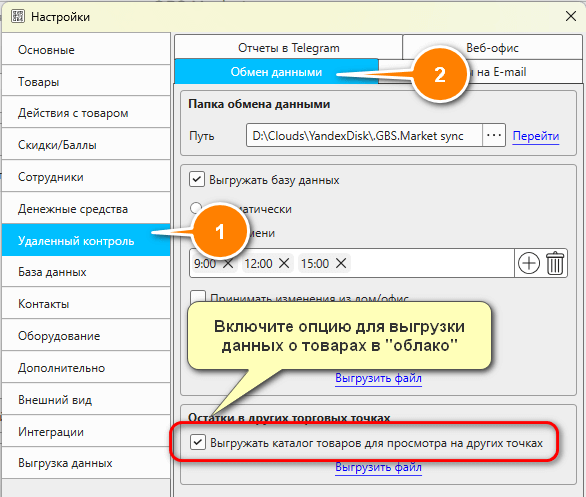
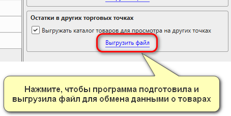
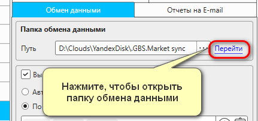
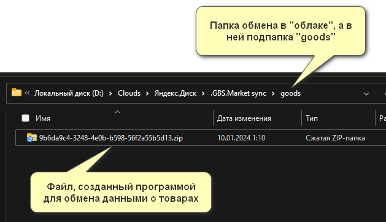
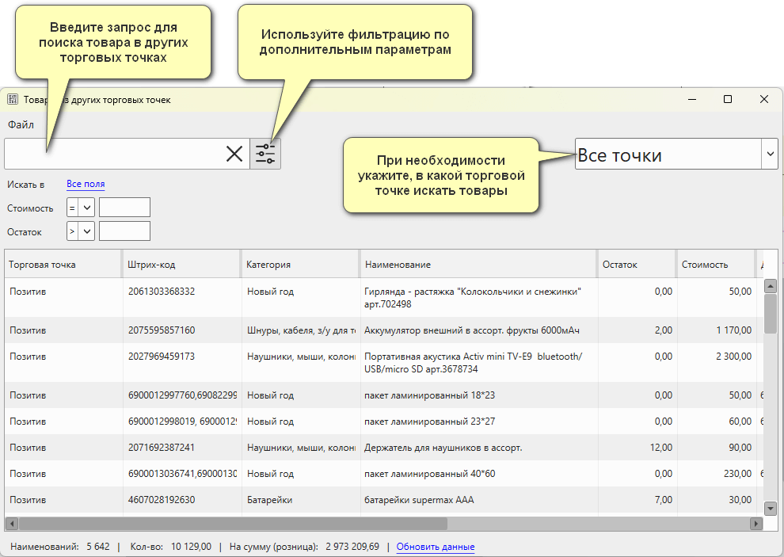

Кассовая программа GBS.Market позволяет просматривать товары и их остатки из других торговых точек, с которыми настроена облачная синхронизация. Например, если у вас сеть магазинов, то продавец в одном магазине сможет сориентировать покупателя о наличии того или иного товара в другой торговой точке.
Настройка выгрузки данных для обмена
Проверьте версию GBS.Market!
Возможность просмотра остатках из других торговых точек доступна начиная с версии 6.5.0.2060. Программа должна быть обновлена на всех торговых точках, участвующих в обмене.
Полезные материалы
Настройка облачного обмена
Для того чтобы просмотр остатков из других торговых точек был доступен, необходимо выполнить ряд настроек.
В первую очередь нужно настроить выгрузку данных в "облако" с торговых точек, для которых необходим обмен информацией о товарах. Сделать это можно по инструкции.
Настройка выгрузки каталога товаров
Когда облачный обмен будет настроен, можно перейти к настройке выгрузки данных о товарах.
Из главной формы в меню откройте Файл – Настройки.
Далее в разделе "Удаленный контроль" перейдите на вкладку "Обмен данными" и включите опцию "Выгружать каталог товаров для просмотра на других точках", как показано на скриншоте ниже.
После включения опции нажмите "Выгрузить файл", чтобы программа создала файл для обмена данными и скопировала его в папку обмена.
Сохраните настройки, чтобы изменения вступили в силу.
Информация
Выгрузка товаров для обмена будет происходить автоматически с периодичностью раз в 15 минут.
Проверка выгрузки
Если все сделано верно, то в папке обмена появится подпапка goods, а в ней архив с данными для обмена.
Нажмите "Перейти" рядом с путем к папке обмена, чтобы открыть ее для просмотра.
Перейдите в подпапку "goods" – в ней должен быть файл для обмена данными.
Количество таких файлов должно соответствовать количеству торговых точек, участвующих в обмене данными.
Поиск товара в других торговых точках
Когда файлы обмена будут выгружены как минимум в двух точках, участвующих в обмене, вы сможете использовать поиск товаров из других точек. Для поиска из главной формы в меню откройте Товары – Просмотр остатков на другой торговой точке.
Важно!
Обратите внимание, что этот пункт появится только в случае, если данные из других торговых точек уже есть в папке обмена.
Если данных нет – пункт меню НЕ будет отображаться!
После этого откроется окно для поиска товаров в других торговых точках, которое похоже на окно поиска товаров.
При необходимости вы сможете указать, во всех торговых точках искать товары или только в определенной. В параметрах поиска доступно:
Продавать товары из других точек, естественно, нельзя. Но при необходимости вы сможете выполнить перемещение товаров между такими точками.